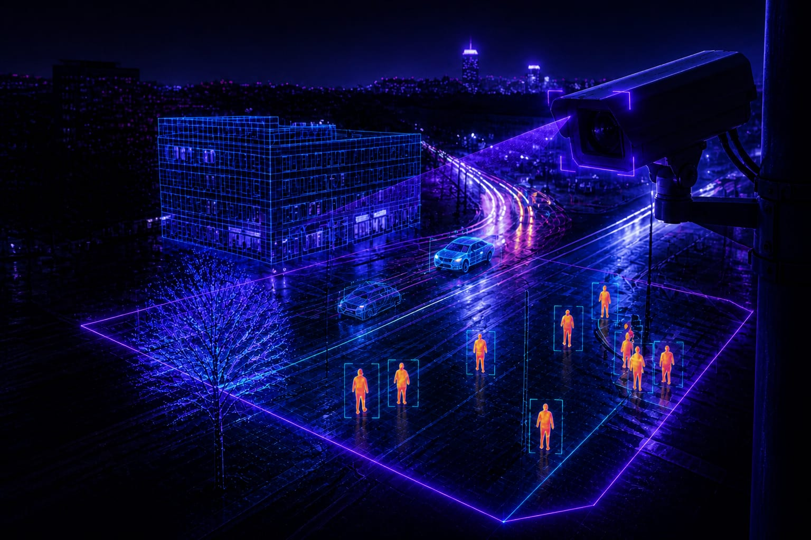

FEATURES
What FrameIQ works on
Computer vision and agentic AI capabilities we work on. Scope is confirmed on enquiry.
Feature information is being prepared.
Capabilities
Details are confirmed on enquiry.
01
Computer Vision for Industry
AI-powered defect detection, production line monitoring, and quality inspection built for Indian manufacturing.
- Automated Quality Inspection
- Defect Detection & Classification
- Production Line Monitoring
- Safety & Compliance AI
- Predictive Maintenance
02
Smart Agriculture (BeejHealth)
BeejHealth is an AI crop health advisory for Indian agriculture. Farmers can photograph crops for disease, pest, and nutrient insights.
- Crop Disease Detection
- Pest & Nutrient Analysis

03
Security & Surveillance AI
Computer vision for threat detection, access control, and perimeter monitoring.
- Threat Detection
- Access Control
- Anomaly & Intrusion Alerts
- Crowd Analytics & Safety

04
Next-Gen AI Vision Agents
Autonomous AI agents combining vision intelligence with decision-making, self-learning systems that adapt with your business.
- Autonomous Vision Systems
- Multi-Modal AI (Vision + NLP)
- Self-Optimizing Pipelines
- Intelligent Workflow Automation
- Custom Agent Development